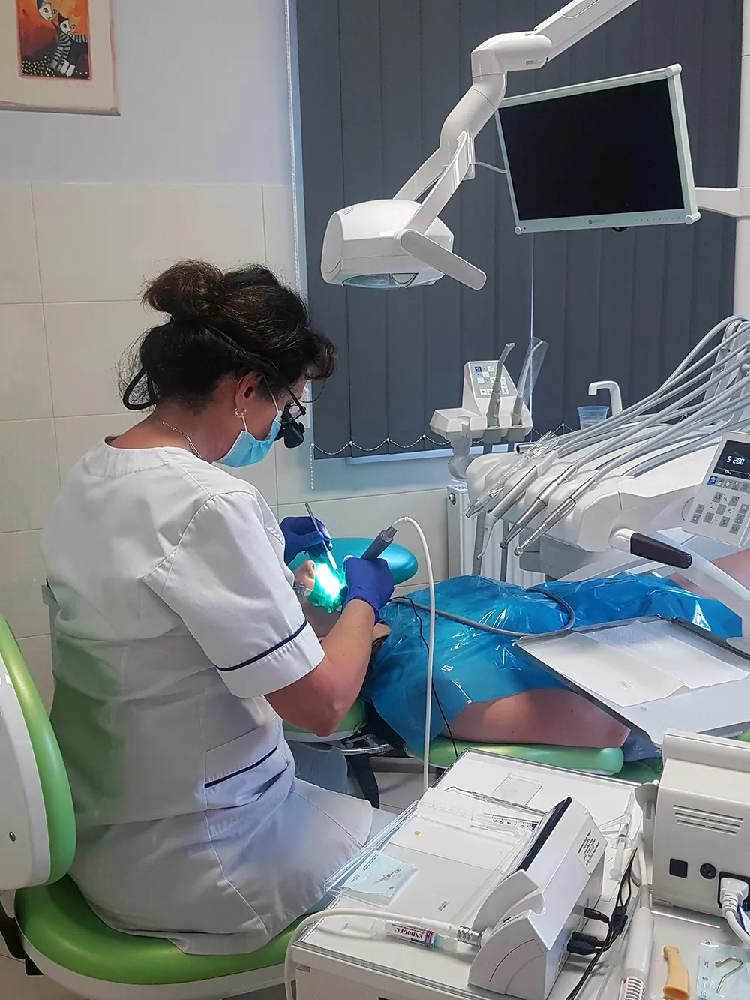
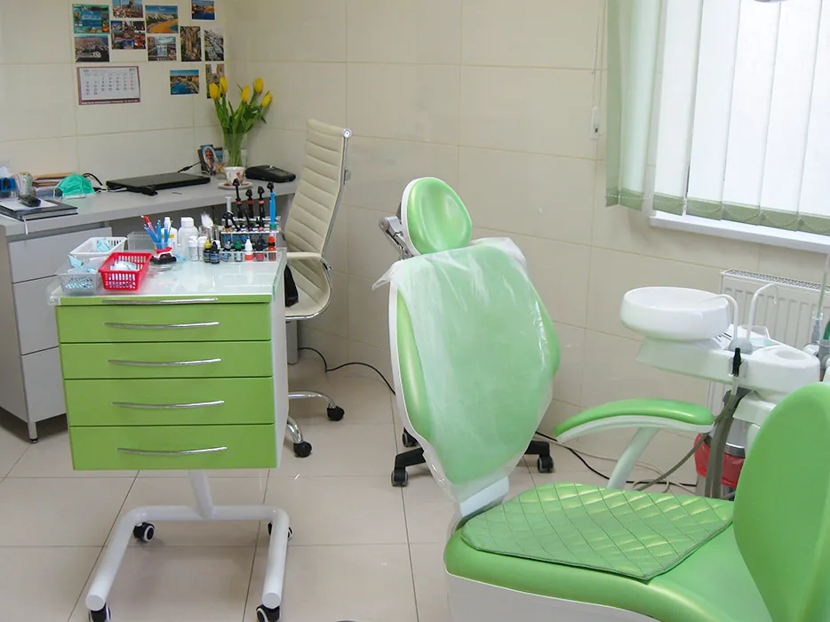
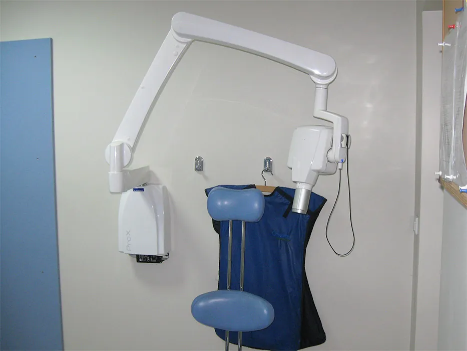

Gabinet stomatologiczny w Limanowej
Leczenie, protetyka, implanty i wybielanie, a na miejscu własna pracownia RTG. Bezpłatny parking przy budynku.
lek. stom. Barbara Kunickaspecjalista I stopnia stomatologii zachowawczej

- SpecjalistaI stopnia stomatologii zachowawczej
- RTG w budynkuzdjęcie bez jeżdżenia gdzie indziej
- Sterylizacjakażdy cykl kontrolowany trzy razy
- Parkingbezpłatny, przy samym budynku
Wszystko w jednym miejscu

LeczenieOd przeglądu i leczenia kanałowego po implanty i wybielanie.Zakres leczenia
Pracownia RTGZdjęcia zębów, pantomogram, cefalometria.Pracownia RTG Gabinet i zespółSprzęt, sterylizacja i ludzie, którzy Cię przyjmą.Poznaj gabinet Kontakt i dojazdGodziny, mapa i telefon.Jak dojechać